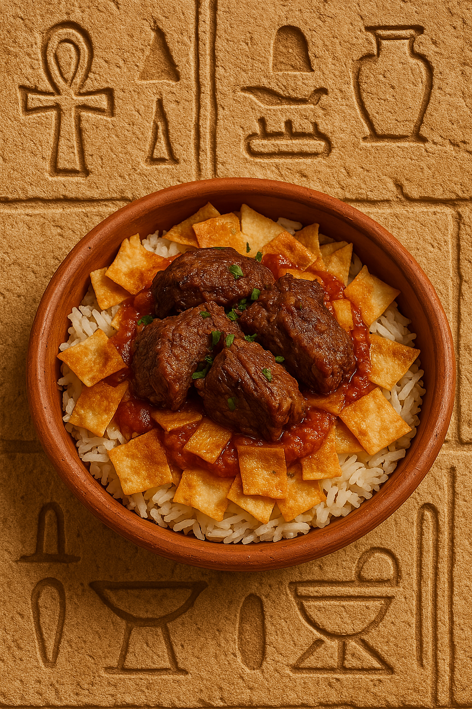

A Festive Layered Delight
Fatteh is a beloved Egyptian dish layered with crispy bread, white rice, tomato-garlic sauce, and tender boiled meat. It’s often served during feasts and special occasions.
Ingredients:
- 2 cups white rice (cooked)
- 2 pieces of pita bread (toasted or fried)
- 400g beef or lamb (boiled until tender)
- 1 tablespoon ghee or butter
- 4 cloves garlic (minced)
- 1 cup tomato puree
- 2 tablespoons vinegar
- Salt and pepper to taste
- Beef broth from boiling the meat
Instructions:
- Cut pita into small squares and toast or fry them until golden.
- In a saucepan, sauté garlic in ghee, then add vinegar and tomato puree. Season and simmer to make the sauce.
- In a large serving dish, layer bread at the bottom, drizzle with hot broth, then add rice on top.
- Pour the tomato garlic sauce evenly over the rice.
- Add the boiled meat on top and serve immediately.